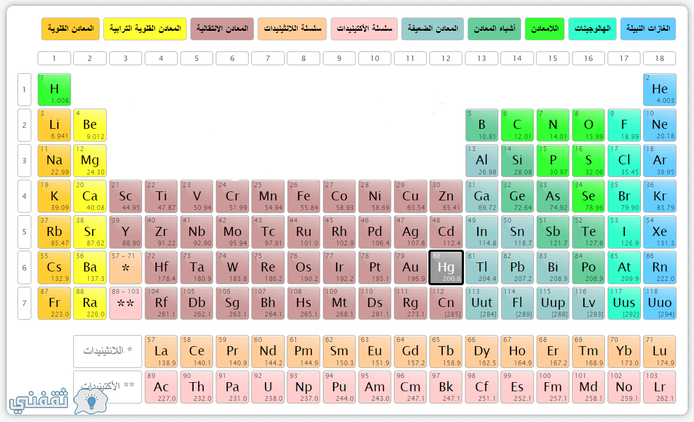

← الرجوع
ما هو الجدول الدوري
الجدول
الدوري
هو
ترتيب
مجدول
للعناصر
الكيميائية
مرتبة
حسب
عددها
الذري
والتوزيع
الإلكتروني
تاريخ الجدول الدوري
في
عام
١٨٦٩
نشر
عالم
روسي
النسخة
الأولى
من
جدوله
الدوري
وقد
رتب
العناصر
حسب
تزايد
أعدادها
الكتلية
وكان
اسم
العالم
ديمتري
مندليف
وقد
لا
خض
منذ
ليف
النمطية
في
الترتيب
حيث
يكون
توليد
للعناصر
التي
في
مجموعة
واحدة
خصائص
متشابهة
،
إلا
أنه
فى
ذلك
الوقت
لم
تكن
جميع
العناصر
معروفة،
فكان
عليه
ان
يترك
ثلاثة
فراغات
في
جدوله
لعناصر
كانت
مجهولة
وخلال
الـ
(10)
سنة
المقبلة
تم
اكتشاف
ال3
عناصر
وهي
الجماليوم
والسكانديوم
-
والجرمانيوم
المجموعات
المجموعة
هي
العامود
الرأسي
في
الجدول
وأهم
المجموعات
هي

العنصر الكيميائي
العنصر
الكيميائي
عبارة
عن
مادة
كيميائية
لا
يمكن
تجزيها
خالصة
مكونه
من
ذرة
وحيدة
فريدة
من
نوعها
تميز
بالعدد
الذري
مهم
العنصر الكيميائي
العنصر
الكيميائي
عبارة
عن
مادة
كيميائية
لا
يمكن
تجزيها
خالصة
مكونه
من
ذرة
وحيدة
فريدة
من
نوعها
تميز
بالعدد
الذري
مهم
الذرة
س\
إذا
الجدول
الدوري
مكون
من
عناصر
كيميائية
والعناصر
الكيميائية
مكونة
من
ذرة
إذا
ما
مكون
الذرة
؟
ج\
الذرة
مكونة
من
ثلاث
شحنات
-
الاكترون
-البروتون
-النيوترون
الإلِكترون
الإلِكترون
جسيمٌ
دون
ذري،
كروي
الشكل
تقريباً،
مكون
للذرة،
له
شِحنة
كهرَبية
سالبة.
ولم
يُعرَف
أن
لها
مكونات
أو
جسيمات
أصغر؛
فعُدَّت
جسيمات
أولية.
النيوترون
النيوترون
جسيم
تحت
ذري
اكتشاف الذرة
نظرية
دالتون
الذرية:
توصل
العالم
دالتون
إلى
أنّ
الذرة
هي
البُنية
الأساسيّة
لأيّ
مادة،
ولا
يُمكن
تجزئتها
إلى
أيّ
شيء
أصغر،
بالإضافة
إلى
ذلك
استطاع
توضيح
كيفيّة
تكوُّن
العناصر
والمُركّبات،
من
خلال
التجارب
الكيميائيّة
التي
قام
بها،
حيث
وجد
أنّ
العنصر
يتكوّن
من
مجموعة
من
الذرات
المُتماثلة
وأنّ
المركبات
عبارة
عن
اندماج
نوعين
أو
أكثر
من
الذرات
التي
يتمّ
إعادة
ترتيبها
أثناء
التفاعل
الكيميائي،
فكوّنت
هذه
الاستنتاجات
المبادئ
الأساسية
لنظريّته
الذريّة
التي
وُضِعت
في
القرن
التاسع
عشر.
اكتشاف
طومسون
للإلكترون:
استناداً
إلى
نظريّة
دالتون
الذريّة
كان
الاعتقاد
السائد
أنّه
لا
يمكن
تبسيط
الذرة
إلى
مكوّنات
أصغر،
ولكن
تمّ
دحض
هذا
الافتراض
عام
1897م
عندما
اكتشف
العالم
طومسون
الإلكترونات.
نموذج
رذرفورد
الذري:
أضاف
رذرفورد
على
ما
جاء
به
طومسون،
واستطاع
بناء
نموذج
أولي
للذرة،
بإثبات
احتوائها
على
نواة
في
مركزها.
نموذج
بور
لحركة
الإلكترونات:
تمكّن
بور
من
تقديم
تصوّر
أوضح
لحركة
الإلكترونات
باكتشافه
أنّها
تدور
حول
النواة
في
مدارات
محدّدة.
أصغر من البروتون !!
الكوارك
أو
الرِكِّين
هو
جسيم
أولي
وأحد
المكونين
الأساسيين
للمادة
في
نظرية
النموذج
القياسي
لفيزياء
الجسيمات
(المكون
الآخر
حسب
هذه
النظرية
هو
الليبتونات)
له
كتلة
ولكن
أبعادها
متناهية
الصغر
صفرية،
تُرصَد
عند
حدوث
تصادم
شديد
بين
البروتون
والإلكترون.
أطلق
موري
جيلمان
عليها
الاسم
كوارك
ومنها
ستة
أنواع.
عنصر اصطناعي
العنصر
الاصطناعي
يكون
غير
ثابت،
وله
فترة
عمر
نصف
قصيرة
للغاية،
(تتراوح
من
كسور
الملي
ثانية
إلى
عدة
ملايين
من
السنين)
بالنسبة
لعمر
الأرض
واحتمال
وجود
أي
ذرة
من
هذه
العناصر
عند
تكون
الأرض.
وتعرف
هذه
العناصر
على
الأرض
فقط
كناتج
من
المفاعلات
النووية
أو
معجلات
الجسيمات.
و
كان
أول
عنصر
اصطناعي
يتم
الحصول
عليه
هو
التكنيتيوم،
الذي
ملأ
فجوة
كانت
موجودة
في
الجدول
الدوري،
واكتشاف
عدم
وجود
أي
نظير
ثابت
للتكنيتيوم
وضح
أسباب
عدم
وجوده
على
الأرض.
له
فترة
عمر
نصف
تبلغ
4.2
مليون
سنة
يعني
عدم
تبقي
أي
من
هذه
النظائر
من
وقت
تكوين
الأرض.
تم برمجة الموقع من احسان سميح الشريف